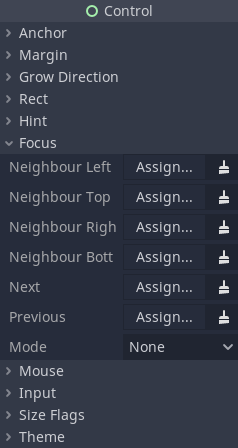

Keyboard/Controller Navigation and Focus
It is a common requirement for a user interface to have full keyboard and controller support for navigation and interaction. There are two main reasons why this is beneficial for projects: improved accessibility (not everyone can use mouse or touch controls for interactions), and getting your project ready for consoles (or just for people who prefer to game with a controller on PC).
Navigating between UI elements with keyboard or controller is done by
changing which node is actively selected. This is also called changing UI focus.
Every Control node in Godot is capable of having focus.
By default, some control nodes have the ability to automatically grab focus
reacting to built-in UI actions such as ui_up, ui_down, ui_focus_next, etc.
These actions can be seen in the project settings in the input map and can be modified.
Warning
Because these actions are used for focus they should not be used for any gameplay code.
Node settings
In addition to the built-in logic, you can define what is known as focus neighbors for each individual control node. This allows to finely tune the path the UI focus takes across the user interface of your project. The settings for individual nodes can be found in the Inspector dock, under the "Focus" category of the "Control" section.

Neighbor options are used to define nodes for 4-directional navigation, such as using arrow keys or a D-pad on a controller. For example, the bottom neighbor will be used when navigating down with the down arrow or by pushing down on the D-pad. The "Next" and "Previous" options are used with the focus shift button, such as Tab on desktop operating systems.
Note
A node can lose focus if it becomes hidden.
The mode setting defines how a node can be focused. All means a node can be focused by clicking on it with the mouse, or selecting it with a keyboard or controller. Click means it can only be focused on by clicking on it. Finally, None means it can't be focused at all. Different control nodes have different default settings for this based on how they are typically used, for example, Label nodes are set to "None" by default, while buttons are set to "All".
Make sure to properly configure your scenes for focus and navigation. If a node has no focus neighbor configured, the engine will try to guess the next control automatically. This may result in unintended behavior, especially in a complex user interface that doesn't have well-defined vertical or horizontal navigation flow.
Necessary code
For keyboard and controller navigation to work correctly, any node must be focused by using code when the scene starts. Without doing this, pressing buttons or keys won't do anything.
You can use the Control.grab_focus() method to focus a control. Here is a basic example of setting initial focus with code:
func _ready():
$StartButton.grab_focus.call_deferred()
public override void _Ready()
{
GetNode<Button>("StartButton").GrabFocus.CallDeferred();
}
Now when the scene starts, the "Start Button" node will be focused, and the keyboard or a controller can be used to navigate between it and other UI elements.